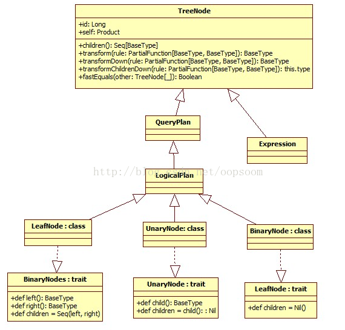

TreeNode
Catalyst中规则的匹配和Logical Plan的转换操作，其实都是基于树的操作，LogicalPlan继承自QueryPlan，而QueryPlan继承自TreeNode。
abstract class LogicalPlan extends QueryPlan[LogicalPlan] with Logging
abstract class QueryPlan[PlanType <: TreeNode[PlanType]] extends TreeNode[PlanType]
abstract class TreeNode[BaseType <: TreeNode[BaseType]]
TreeNode Library是Catalyst的核心类库，语法树的构建都是由一个个TreeNode组成。在Catalyst里，这些Node都是继承自Logical Plan，可以说每一个TreeNode节点就是一个Logical Plan。主要继承关系类图如下：

下面介绍一下TreeNode上的一些主要操作。
transform
该方法接受一个PartialFunction，例如Analyzer的Batch里面的Rule。将Rule迭代应用到该节点的所有子节点，最后返回这个节点的副本。如果rule没有对一个节点进行PartialFunction的操作，就返回这个节点本身。
/**
* Returns a copy of this node where `rule` has been recursively applied to the tree.
* When `rule` does not apply to a given node it is left unchanged.
* Users should not expect a specific directionality. If a specific directionality is needed,
* transformDown or transformUp should be used.
* @param rule the function use to transform this nodes children
*/
def transform(rule: PartialFunction[BaseType, BaseType]): BaseType = {
transformDown(rule)
}
transformDown & transformUp
transform方法真正的调用是transformDown，这里用到了用先序遍历来对子节点进行递归的Rule应用。如果在对当前节点应用rule成功，修改后的节点afterRule，来对其children节点进行rule的应用。
transfromUp用的是后序遍历。
/**
* Returns a copy of this node where `rule` has been recursively applied to it and all of its
* children (pre-order). When `rule` does not apply to a given node it is left unchanged.
* @param rule the function used to transform this nodes children
*/
def transformDown(rule: PartialFunction[BaseType, BaseType]): BaseType = {
val afterRule = rule.applyOrElse(this, identity[BaseType])
// Check if unchanged and then possibly return old copy to avoid gc churn.
if (this fastEquals afterRule) {
transformChildrenDown(rule)
} else {
afterRule.transformChildrenDown(rule)
}
}
transformChildrenDown & transformChildrenUp
transformChildrenDown是最重要的方法，对children节点进行递归的调用PartialFunction，利用最终返回的newArgs来生成一个新的节点，这里调用了makeCopy()来生成节点。
transformChildrenUp类似，只是最后调用transformUp。
/**
* Returns a copy of this node where `rule` has been recursively applied to all the children of
* this node. When `rule` does not apply to a given node it is left unchanged.
* @param rule the function used to transform this nodes children
*/
def transformChildrenDown(rule: PartialFunction[BaseType, BaseType]): this.type = {
var changed = false
val newArgs = productIterator.map {
case arg: TreeNode[_] if children contains arg =>
val newChild = arg.asInstanceOf[BaseType].transformDown(rule)
if (!(newChild fastEquals arg)) {
changed = true
newChild
} else {
arg
}
case Some(arg: TreeNode[_]) if children contains arg =>
val newChild = arg.asInstanceOf[BaseType].transformDown(rule)
if (!(newChild fastEquals arg)) {
changed = true
Some(newChild)
} else {
Some(arg)
}
case m: Map[_,_] => m
case args: Traversable[_] => args.map {
case arg: TreeNode[_] if children contains arg =>
val newChild = arg.asInstanceOf[BaseType].transformDown(rule)
if (!(newChild fastEquals arg)) {
changed = true
newChild
} else {
arg
}
case other => other
}
case nonChild: AnyRef => nonChild
case null => null
}.toArray
if (changed) makeCopy(newArgs) else this
}
makeCopy
通过反射生成节点副本。
/**
* Creates a copy of this type of tree node after a transformation.
* Must be overridden by child classes that have constructor arguments
* that are not present in the productIterator.
* @param newArgs the new product arguments.
*/
def makeCopy(newArgs: Array[AnyRef]): this.type = attachTree(this, "makeCopy") {
try {
// Skip no-arg constructors that are just there for kryo.
val defaultCtor = getClass.getConstructors.find(_.getParameterTypes.size != 0).head
if (otherCopyArgs.isEmpty) {
defaultCtor.newInstance(newArgs: _*).asInstanceOf[this.type]
} else {
defaultCtor.newInstance((newArgs ++ otherCopyArgs).toArray: _*).asInstanceOf[this.type]
}
} catch {
case e: java.lang.IllegalArgumentException =>
throw new TreeNodeException(
this, s"Failed to copy node. Is otherCopyArgs specified correctly for $nodeName? "
+ s"Exception message: ${e.getMessage}.")
}
}
其他函数
除此以外，TreeNode还支持一些集合操作函数
map 将函数作用到每一个结点，返回转换后的树
/**
* Returns a Seq containing the result of applying the given function to each
* node in this tree in a preorder traversal.
* @param f the function to be applied.
*/
def map[A](f: BaseType => A): Seq[A] = {
val ret = new collection.mutable.ArrayBuffer[A]()
foreach(ret += f(_))
ret
}
flatMap 将函数作用到每个结点，返回一个Seq
/**
* Returns a Seq by applying a function to all nodes in this tree and using the elements of the
* resulting collections.
*/
def flatMap[A](f: BaseType => TraversableOnce[A]): Seq[A] = {
val ret = new collection.mutable.ArrayBuffer[A]()
foreach(ret ++= f(_))
ret
}
collect 将函数作用到每个结点，去除没有该函数定义的结点，返回剩下的结果Seq
/**
* Returns a Seq containing the result of applying a partial function to all elements in this
* tree on which the function is defined.
*/
def collect[B](pf: PartialFunction[BaseType, B]): Seq[B] = {
val ret = new collection.mutable.ArrayBuffer[B]()
val lifted = pf.lift
foreach(node => lifted(node).foreach(ret.+=))
ret
}